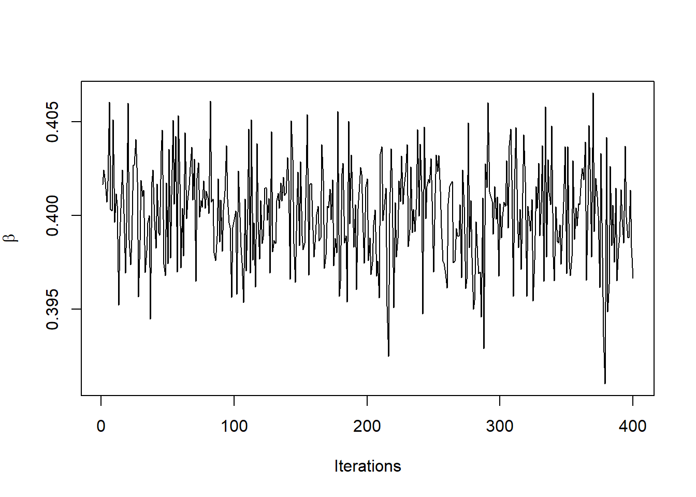
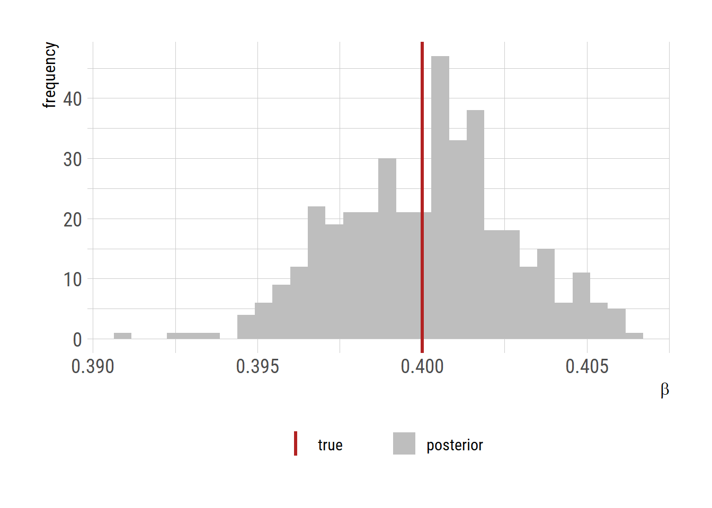
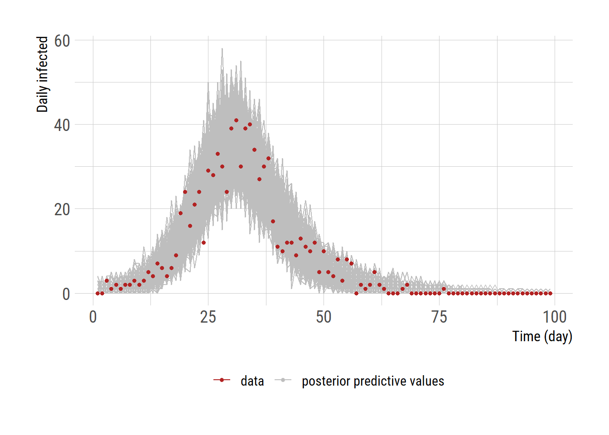

library(nimble)
sir_incidence <- nimbleFunction(
run = function(beta = double(0)) {
tend <- 100 # 100 days of simulation
dt <- 0.1 # time step of 0.1 day
# initial condition
St <- 999
It <- 1
Rt <- 0
CIt <- 0
# create vectors for the state variables
S <- rep(0, tend)
I <- rep(0, tend)
R <- rep(0, tend)
CI <- rep(0, tend) # cumulative incidence
# first elements of the vectors are initial conditions
S[1] <- St
I[1] <- It
R[1] <- Rt
CI[1] <- CIt
gamma <- 0.2 # 1/gamma = duration of infectiousness
for (i in 2:tend) { # each day
for (j in 1:ceiling(1/dt)) { # time steps per day
Nt <- St + It + Rt # total population size
rate_StoI <- St * beta * It / Nt * dt # transition rate from S to I
rate_ItoR <- gamma * It * dt # transition rate from I to R
dS <- - rate_StoI # rate of change for S
dI <- rate_StoI - rate_ItoR # rate of change for I
dR <- rate_ItoR # rate of change for R
dCI <- rate_StoI # rate of change for cumulative incidence
St <- St + dS # update the St
It <- It + dI # update the It
Rt <- Rt + dR # update the Rt
CIt <- CIt + dCI # update the CIt
}
S[i] <- St # put St in the vector
I[i] <- It # put It in the vector
R[i] <- Rt # put Rt in the vector
CI[i] <- CIt # put CIt in the vector
}
# daily incidence from cumulative incidence
inc <- CI[2:tend] - CI[1:(tend-1)]
return(inc)
returnType(double(1)) # return type
}
)SEIR model using the Nimble pacakge
nimble
MCMC
posterior predictive check
trace plot
감염병 수리 모형을 개발하는 데 있어 가장 근본적인 질문 중 하나는 주어진 관찰값 (시계열)하에서 어떤 모형을 선택하고 그 모수의 값을 어떻게 결정하는가이다. 모형을 선택하는 과정은 따로 다루기로 하고 여기서는 일반적으로 사용되는 감염병 수리 모형 (i.e., SIR)을 사용할 때 모수를 추정하는 과정에 대해서 이야기해보자. 최대 가능도 (maximum likelihood) 방법에 대해서는 전에 언급하였다. 모수를 추정하는 여러 방법 중에 마르코프 연쇄 몬테카를로 (Markov Chain Monte Carlo; MCMC) 방법이 적절한 모수의 값을 찾아내고 그 값의 불확실성 (uncertainty)를 나타내는 데 가장 널리 쓰이는 방법 중의 하나이다. MCMC 알고리듬을 직접 작성해서 사용한는 것도 원리를 이해하는 데에는 도움이 되지만 이미 다양한 통계 패키지에서 MCMC가 사용되고 있으므로 기존 패키지를 사용하는 것도 합리적인 방법이 될 수 있다. 회귀 분석 등 통계모형의 경우BUGS (Bayesian Inference Using Gibbs Sampling) 혹은 JAGS (Just Another Gibbs Sampler), Stan, 그리고 NIMBLE 등에 구현된 MCMC를 사용하는 것이 많이 보편화 되어 있다.
이 중 NIMBLE 은 R 패키지 nimble을 이용해서 사용할 수 있고 패키지에서 제공하는 함수 기능을 이용해서 감염병 수리 모형을 구현하고 MCMC 까지 할 수 있다. syntax 또한 R과 유사해서 R를 사용하는 사람에게는 Stan 보다 더 접근이 용이한 것 같다. 아래에는 nimble 함수 기능을 이용하여 Euler 방법에 기반한 SIR 모형을 구현한 예이다.
모수 추정을 위해서 푸아송 분포를 이용하여 거짓 관찰값 (Y) 을 만들어보자.
# create observation
beta <- 0.4 # true beta
X <- sir_incidence(beta) # true daily incidence
Y <- rpois(length(X), lambda=X) # Poisson-distributed observation아래와 같이 prior distribution, likelihood, 그리고 posterior predictive check위해서 ypred 도 함께 구현한다.
# BUGS style code
code <- nimbleCode({
beta ~ T(dnorm(0, sd = 2), 0, 2) # prior for beta truncated at 0 and 2
mu[1:N] <- sir_incidence(beta) # daily incidence from the model
for (i in 1:N) {
y[i] ~ dpois(mu[i]) # likelihood
ypred[i] ~ dpois(mu[i]) # posterior predictive value
}
})아래와 같이 초기 조건을 설정하고 모형을 구성한다. 빠른 실행을 위해서 컴파일 한다.
# constants, data, and initial values
constants <- list(N = length(Y)) # number of observation
data <- list(y = Y) # observation
inits <- list(beta = 0.1) # starting point for beta
# create the model object
sir_model <- nimbleModel(code = code,
constants = constants,
data = data,
inits = inits,
check = FALSE)
sirMCMC <- buildMCMC(sir_model, monitors=c('beta','ypred'))
Csir <- compileNimble(sir_model)
CsirMCMC <- compileNimble(sirMCMC, project=Csir)
# thining interval was chosen based on previous analyses of ACF
samples <- runMCMC(CsirMCMC, niter=5000, thin=10, nburnin=1000)
# saveRDS(samples, "samples_nimble_20231125e.rds")samples <- readRDS("samples_nimble_20231125e.rds")
plot(samples[,1], type="l", ylab=expression(beta), xlab="Iterations")
\(\beta\) 의 posterior distribution과 거짓 자료를 만들기 위해 사용했던 \(\beta\)값 (빨간색)을 비교해보자.
library(ggplot2)
extrafont::loadfonts("win", quiet=TRUE)
theme_set(hrbrthemes::theme_ipsum_rc(base_size=14, subtitle_size=16, axis_title_size=12))
samples |>
as.data.frame() |>
ggplot()+
geom_histogram(aes(x=beta, fill="posterior"))+
geom_vline(aes(xintercept=0.4, color="true"), linewidth=1.2)+
labs(x=expression(beta), y="frequency")+
scale_fill_manual("", values=c("posterior"="grey"))+
scale_color_manual("", values=c("true"="firebrick"))+
theme(legend.position = "bottom")
Posterior predictive check
# posterior predictive check
nsamp <- nrow(samples)
df <- data.frame(time=rep(1:99, nsamp+1),
name=c(rep(1:nsamp, each=99),rep("data",99)))
df$value <- c(c(t(samples[,2:100])), Y)
library(dplyr)
ggplot(df)+
geom_line(data=filter(df, name!="data"), aes(x=time, y=value, group=name,
color="posterior predictive values"))+
geom_point(data=filter(df, name=="data"), aes(x=time, y=value, color="data"),
size=1.2) +
labs(x='Time (day)', y='Daily infected')+
scale_color_manual("",values=c("posterior predictive values"="grey",
"data"="firebrick"))+
theme(legend.position = "bottom")
# ggsave("nimble_ppc_incidence.png", gg, units="in", width=3.4*2, height=2.7*2)